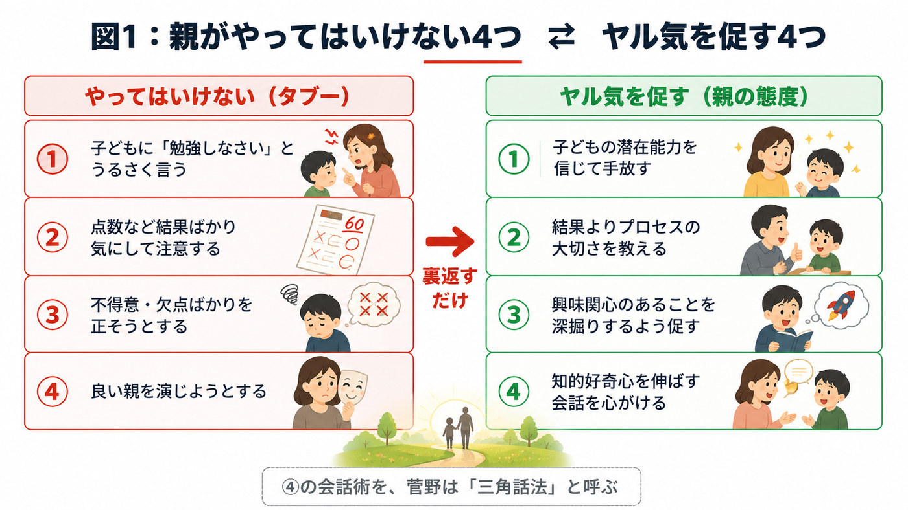
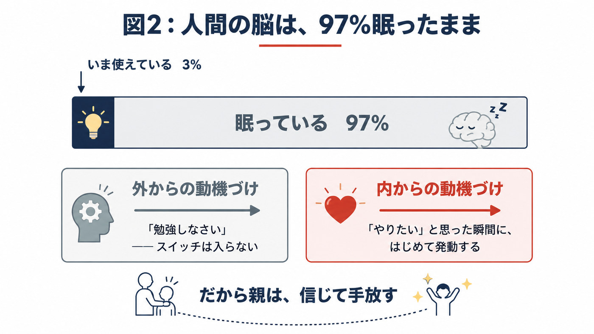
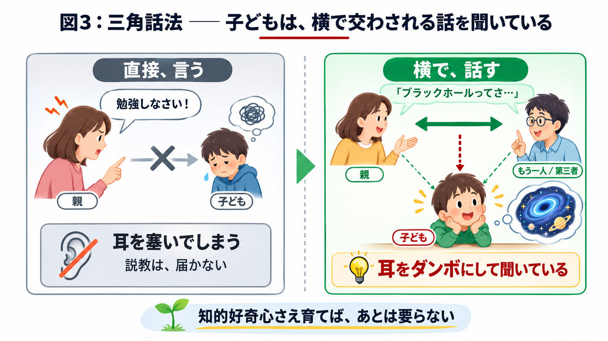

前回まで三回にわたって、AIの専門家である中村さんをお招きして、AIがもたらす未来について、そして教育についてお話ししてきました。その中で、私も少し驚いたことがあったんです。これからは仕事をAIが全部やってしまう、と中村さんはおっしゃっていた。実際、そういう傾向にあるらしくて、先日もNHKで、事務職の方が自分の居場所がだんだんなくなっていく、AIに取って代わられていくと感じて、退職する人が増えている、と放送されていました。
AIの時代によって、社会のシステムそのものが変わっていくんだな、と思いましたね。
そこで今日は、教育の話をしたいと思います。子どもの自立とヤル気を促す、最強の法。
自立心というのは、非常に大切です。自立心の反対は、依存心。親御さんがあまりにも子どもの面倒を見すぎると、子どもは依存しやすくなる ── これは、お分かりでしょう。
第一部 ── 親がやってはいけない、四つのこと
まず、親がやってはいけないタブーを四つ、挙げたいと思います。
§1 ── 「勉強しなさい」と、うるさく言う
子どもに勉強を強要するのはやめましょう、ということを、私はいつもセミナーや講演会で親御さんにお話ししています。とはいえ、子どもが勉強しないとイライラして、つい強要してしまう親御さんが多いんですね。
これは、絶対にやってはいけないと思います。
40年以上、私は教育の現場にいましたけれども、親が子どもに勉強しろと言って、子どもが喜んで勉強するようになったという例は、一つも見たことがないんですよ。
たしかに、あまりうるさく言えば、お子さんがいやいや部屋にこもって、勉強する姿勢だけを見せることはあるかもしれません。でも、形だけになってしまう。義務感だけで勉強することになって、まったく身につかない。そして何より、自主的に勉強するという癖、習慣がつかないんですね。
§2 ── 点数や結果ばかりを気にする
テストの点数や通知表の数字に、親が一喜一憂する。これも、とても子どもに悪い影響を与えるなと思っています。
90点を取ると「いい点数だね」と喜び、50点だと叱る。それだと子どもは、目先の点数を追う勉強の仕方しかしなくなる。テストに出そうなものだけを勉強する、ということになってしまうわけです。
アメリカの実験でも、こういうものがあります1。子どもを二つのグループに分けて、一方には点数だけを褒め、もう一方にはプロセス、つまり努力を褒める。その後の成績の伸びはどうなるか。
点数だけを褒めた子どもは、だんだん下がっていくんですね。
どうしてか。点数を褒められたということは、「自分の能力が高いことを褒められた」と解釈するわけです。そうすると、その高さをそのまま維持しなければいけない、いつもいい点数を取らなければいけない、と思ってしまう。だから次から、あまり勉強しなくなる。親の期待を、自分から下げにいくような働きが起きてしまうんですよ。
§3 ── 不得意教科や欠点を、正そうとする
これも、やってはいけないことです。なぜかというと、冒頭にお話ししたように、今の時代は評価基準が変わってきているからです。
これまでの教育だと、英・数・国・理・社の五教科がまんべんなくできることがいいことだ、と思っている親御さんが多い。ところが、何でもかんでもある程度平均的にできる、という人は、これからの時代にはあまり通用しなくなってしまうんですね。
何か突出した、誰にも負けない能力。「これだけは負けない」というものを持っている人のほうが、企業にしても世間にしても、求められる人材ということになるわけです。
§4 ── 「良い親」を演じようとする
これはどういうことか。昔、少年院 ── 罪を犯した子どもたちを更生させる施設ですが ── そこに医師として勤めた方の話です。
その施設では、子どもたちが悪いことをすると、罰則を与えたり、感想文を書かせたりする。そうすると、子どもたちはみんな、立派な文章を書くらしいんですね。自分の迷惑行為を深く反省しております、これからは改めていきたいと思います ── そういう模範的な文章を、みんなが書く。
それはどういうことか。親が「こうすべき」「ああすべき」という世間の常識を、教え込みすぎているということなんです。その方の書いた本のタイトルが、『良い親を演じると子供が不良になる』というんですよ。
私もたくさんの親御さんと接していて、どうも建前と本音を分けてしまっている方が多いと感じます。子どもの前で立派なことを言おうとして、それが世間の常識をなぞっているだけになっている。
子どもは、親の本音と建前が違うということに、思春期になるとすぐ気づきます。そして、その偽善的な態度のほうを学んでしまう。そうすると、親の言うことに信憑性を感じなくなるんですね。
第二部 ── 自立とヤル気を促す、四つの態度
では、自立心とヤル気を促す親の態度とは何か。それは、今の四つのタブーと、ちょうど逆のことになります。

§5 ── 子どもの潜在能力を信じて、手放す
信じて手放す。これを、私はいつもスローガンのように言っています。
脳科学者も言うように、人間は能力の3%くらいしか発揮していない、といわれます2。残りの97%はどこへ行ったのか、という話になるわけですけれども ── それは、動機づけなんですね。
子どもが本当に「勉強をやりたい」「やらなければ」と思ったときに、はじめて発動するものなんです。外からの動機づけでは、無理なんですよ。 眠っている力のスイッチは、外からでは入らない。

ですから親はどうすればいいか。子どもの能力はまだたくさんあるのだと、心から信じること。そして、あとはあれこれ言わないことです。
§6 ── 結果よりも、プロセスの大切さを教える
点数や結果ばかりを気にする、その反対です。
プロセスの大切さとは何か。テストの一つの問題でも、答えに至るプロセスはいくつもあるんですよ。正解は、一つではない。つまり、多様な選択肢や可能性を考慮するということなんですね。
子どもが答えに到達するまでに、どんな思考経路をたどったか。そこを親が少し注意して見てあげて、聞いてあげる。すると、「答えは間違ったかもしれないけれど、プロセスは非常に面白い」ということがある。
大学受験でも、国立大学の数学などは、先生がプロセスをちゃんと見てくれるんです。そこを評価して点数がつく。答えは一つではないということを、子どもに教えてほしいんですね。
§7 ── 興味関心のあることを、深掘りさせる
得意教科でも、好きな教科でも、趣味でもいい。何かそういうものがあるお子さんに対しては、親はそれをもっと深く追求するように促してほしいんです。
一緒になって「面白いね」と言う。あるいは、「ちょっとそれ、教えてくれない？」と、子どもに教えを乞う。そういう形を取ると、子どもはヤル気を出しますよね。
さきほど、不得意や欠点を正そうとしない、と言いましたけれども、得意を伸ばすことのほうが大事なんです。平均にお金を出す企業はないけれど、突出した能力にお金を出すところは、いっぱいあるわけですから。
§8 ── 知的好奇心を伸ばす、日常の会話
そして最後、四つ目。これが一番大事だと、私は思っているんですね。
子どもの知的好奇心を伸ばす会話を、日常から心がけるということです。私はこれを、三角話法と呼んでいます3。
お子さんに直接、何か説教じみたことを言うのではありません。
子どもは、親が自分に向かってメッセージを発した場合には、耳を塞いでしまうんですね、実は。でも、親が他の人と話していることは、耳だんぼで聞いているんですよ。
ですから、「こんなことが面白いよね」という話を、子どもの前で、他の誰かに向かって話す。お父さんとお母さんでもいいし、第三者でもいい。そこで、たとえばブラックホールの話とかですね、面白い話をしてほしいんです。

知的好奇心さえ、特に小学生時代に伸ばしておけば、あとは何もいらないというくらいに、成績は伸びていきます。
次回は、中学受験について
次回は、今流行りの中学受験について。中学受験の指導のプロの先生をお招きして、中学受験というものが果たして本当に功罪どちらなのか、お得なのか、利益があるのか、ないのか ── そういうことについてお話をしたいと思います。よろしくお願いいたします。
ご家庭で試してみてください
この講話を「聞いて終わり」にしないために、今日から試せる小さな三つを置いておきます。
1. 一週間、「勉強しなさい」を言わないでみる。
言わなかった日に、家の中の空気がどう変わるか。お子さんの様子がどう変わるか。それだけを観察してみてください。何も変わらなくても構いません。まずは、言わずにいられるかどうかです。
2. 点数ではなく、「どうやって解いたの？」と聞く。
答案が返ってきたとき、数字ではなく道筋を聞いてみる。間違っていた問題こそ、聞き甲斐があります。面白い考え方をしていたら、そこを面白がってください。
3. 今日、子どもに聞こえるところで、誰かに面白い話をする。
ブラックホールでも、歴史でも、仕事で知ったことでも構いません。子どもに向けないこと。教えようとしないこと。自分が面白がっていることが、いちばん大事です。